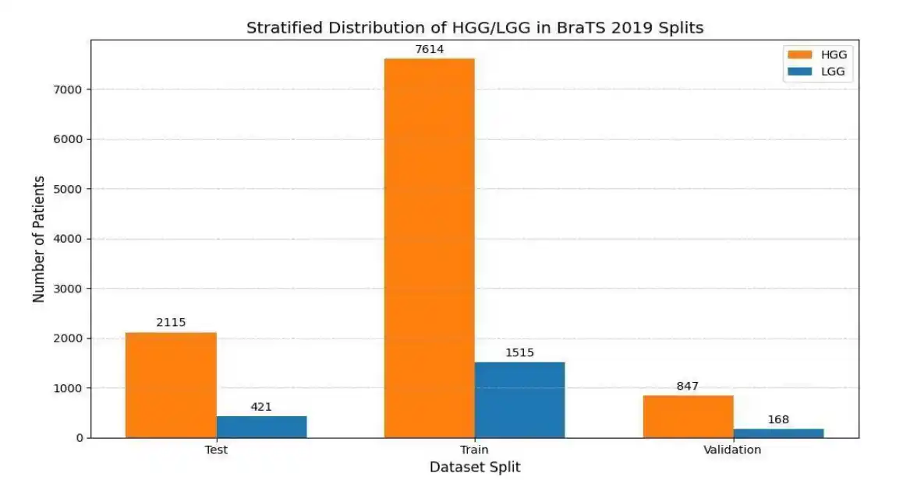
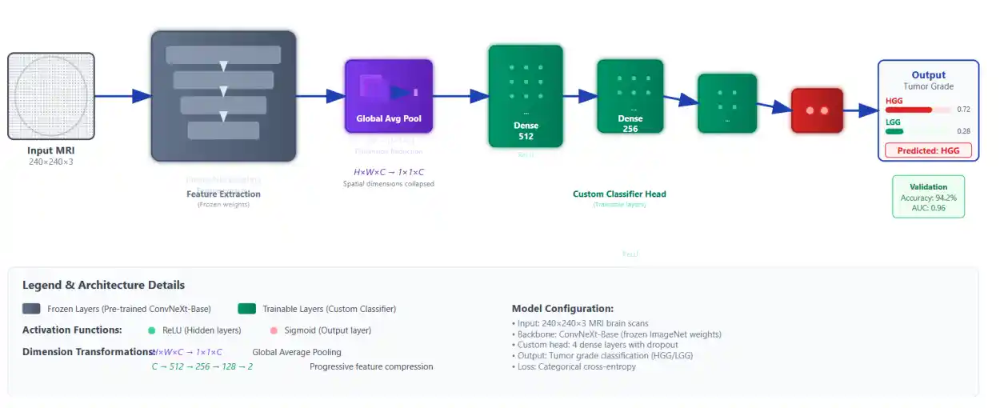

Abstract
This paper presents an advanced automated brain tumor grading framework leveraging the ConvNextBase architecture for precise classification of high-grade gliomas (HGG) and low-grade gliomas (LGG) using multimodal magnetic resonance imaging (MRI) data from the BraTS 2019 dataset. The model's convolutional base is frozen during training to leverage pre-learned hierarchical features, ensuring effective learning despite the limited size of medical imaging datasets. Performance evaluation on the BraTS 2019 test set reveals outstanding results, with the model achieving 98.6% accuracy, 0.995 AUC, and a high F1-score of 0.992, surpassing conventional machine learning methods such as SVM with handcrafted features and modern deep learning architectures like ResNet and EfficientNet. Overall, this work significantly contributes to the body of automated neuro-oncology tools by offering a non-invasive, high-accuracy, and clinically scalable brain tumor grading approach, potentially transforming diagnostic processes and patient management in neuropathology.
1. Introduction
Brain tumors are among the leading causes of neurological morbidity and mortality worldwide, necessitating prompt and accurate diagnosis to optimize patient outcomes. Gliomas, which arise from glial cells, display diverse malignancy grades from low-grade gliomas (LGG) to high-grade gliomas (HGG), with prognostic and therapeutic implications that vary substantially across grades. Accurate brain tumor grade classification traditionally relies on invasive biopsy followed by histopathological evaluation, which carries risks and may not be feasible for all patients.
Magnetic resonance imaging (MRI), with its diverse sequences such as T1-weighted, contrast-enhanced T1 (TIC), T2-weighted, and fluid attenuated inversion recovery (FLAIR), offers a non-invasive window into tumor morphology and heterogeneity, facilitating automated analysis. To reconcile the advantages of CNNs with transformer architecture benefits, ConvNext has emerged as an architecture blending convolutional robustness with transformer design elements. ConvNext achieves state-of-the-art image classification results while maintaining efficient training and inference, making it highly suitable for medical imaging applications with limited data.
2. About the Dataset
The dataset utilized for this research is BraTS 2019. This dataset is a well-known benchmark used for developing and evaluating algorithms for brain tumor analysis from multi-modal MRI scans. It is part of the Medical Segmentation Decathlon and the Multimodal Brain Tumor Image Segmentation Challenge (BraTS).
Dataset Overview
- Total Samples: 335 patient cases
- Tumor Type: Gliomas (High-Grade Glioma (HGG) and Low-Grade Glioma (LGG))
- Imaging Modalities (per patient): T1-weighted (T1), T1 with contrast enhancement (T1Gd/T1ce), T2-weighted (T2), and Fluid Attenuated Inversion Recovery (T2-FLAIR)

Ground Truth Annotations
Each label map contains voxel-wise annotations for specific tumor sub-regions:
- Label 1: Necrotic and non-enhancing tumor core (NCR/NET)
- Label 2: Peritumoral edema (ED)
- Label 4: Enhancing tumor (ET)

3. Research Methodology
A systematic research methodology was designed. This methodology integrates dataset selection, preprocessing techniques, data augmentation, model architecture, and training strategies to effectively address the challenges posed by medical imaging data.
1. Dataset and Data Preparation
The BraTS 2019 dataset, a publicly available and widely recognized benchmark for brain tumor segmentation and classification, was employed in this study. To ensure the model focuses on informative regions and to mitigate class imbalance, a specialized slice extraction algorithm was implemented. Slices were selected only if the tumor volume met a minimum threshold of 3% of the total slice area. To balance the dataset, a maximum of 35 slices per patient were extracted for HGG and 22 for LGG. Finally, the extracted data was partitioned using a stratified split into 80% training, 10% validation, and 10% testing sets, preserving the HGG/LGG distribution across all splits.

2. Preprocessing and Data Generator
To optimize memory utilization and ensure thread-safe parallel data loading, a custom Keras
Sequence Data Generator was developed. During preprocessing, each 2D MRI slice was normalized using
Z-score standardization calculated from the training set:
Slices were resized to 240x240 pixels using OpenCV to conform to the ConvNeXt model's input dimensions. Furthermore, since the dataset consists of single-channel grayscale images, they were stacked to create three-channel RGB-like representations, ensuring compatibility with the pre-trained ImageNet weights.
3. Model Architecture and Training Strategy
Given limited annotated medical imaging data, transfer learning was employed using the ConvNext-Base model, a modern CNN architecture that incorporates design elements inspired by vision transformers, resulting in superior feature extraction efficiency and accuracy.

The ConvNext-Base model was initialized with weights pre-trained on the large-scale ImageNet dataset and loaded with the classification head removed (include_top=False). All ConvNext layers were frozen during training to leverage learned representations as fixed feature extractors. A custom classification head was appended, comprising three fully connected dense layers with ReLU activation functions (sizes 512, 256, and 128 neurons), followed by a sigmoid-activated output neuron for binary classification (HGG vs LGG).
The model was compiled using the Adam optimizer with a custom learning rate of 0.00005 and binary cross-entropy as the loss function. Training was monitored using an Early Stopping callback with a patience of 10 epochs based on validation loss, which restored the best weights to prevent overfitting. The final best model achieved convergence around epoch 46.
4. Results
The ConvNext-based classification model demonstrated excellent performance on the BraTS 2019 test set, achieving a low loss value and high accuracy indicative of robust discriminative capability between low- and high-grade gliomas. We evaluated our trained model on different evaluation metrics and it demonstrates excellent overall performance.
Evaluation Metrics
To comprehensively evaluate the model, we utilized several key performance indicators:
Sensitivity (Recall): Measures the model's ability to correctly identify actual HGG cases out of all actual HGG tumors.
Precision (Positive Predictive Value): Measures the proportion of tumors predicted as HGG that are truly HGG.
F1-Score: The harmonic mean of precision and recall. It provides a balance between false positives and false negatives, which is crucial for medical diagnoses.
Final Model Performance
- Loss: 0.0410
- Accuracy: 98.66%
- AUC: 0.9950
- Sensitivity: 0.9954
- Precision: 0.9430
- F1-Score: 0.9920

5. Conclusion
The proposed study demonstrates the effectiveness of a ConvNext-Base model leveraging transfer learning for high-accuracy classification of brain tumor grades using multimodal MRI data from the BraTS 2019 dataset. By integrating modern CNN architecture inspired by transformer design and applying careful preprocessing, data balancing, and model training strategies, the approach achieves a remarkable accuracy of 98.6%, surpassing several state-of-the-art methods. Overall, the study contributes a robust and efficient automated framework that balances performance with computational practicality, addressing critical challenges in neuro-oncological imaging.
6. Neuro Insight: Clinical Application
To bridge the gap between academic research and clinical utility, the deep learning models discussed above were integrated into a comprehensive, user-friendly web application named Neuro Insight. This platform empowers medical professionals to seamlessly upload 3D MRI scans, perform real-time automated segmentation, accurately classify tumor grades (HGG/LGG), and automatically generate detailed clinical reports.